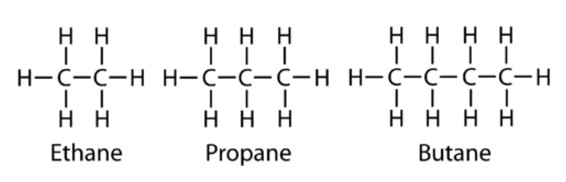
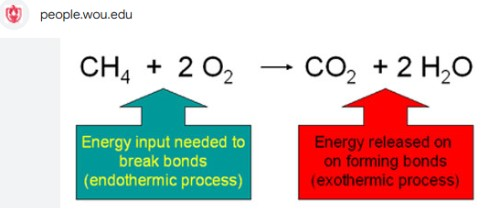
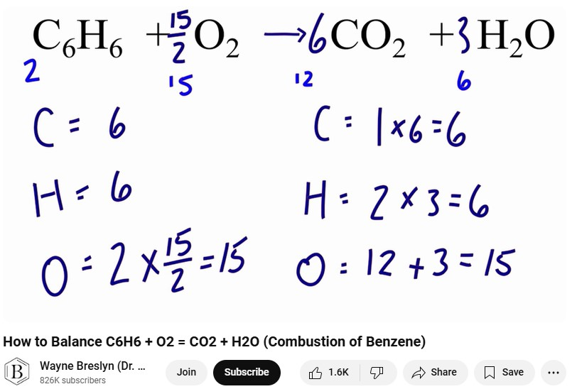
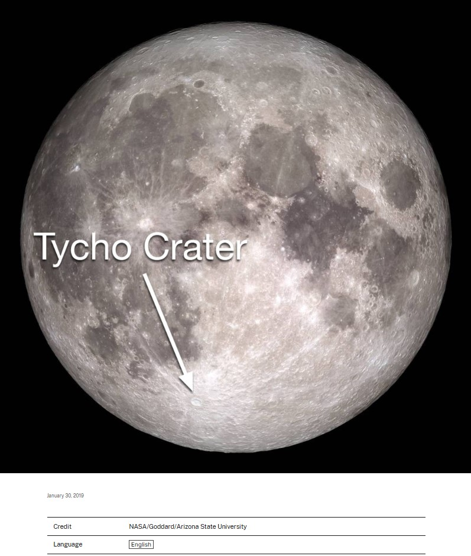
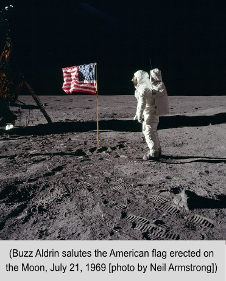
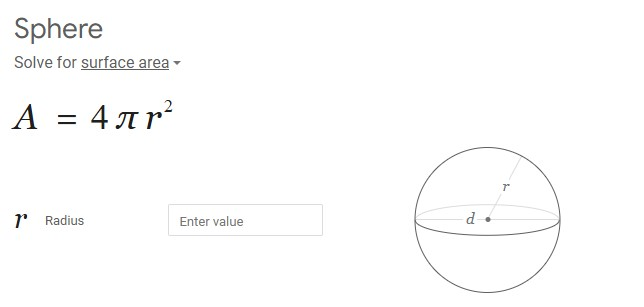
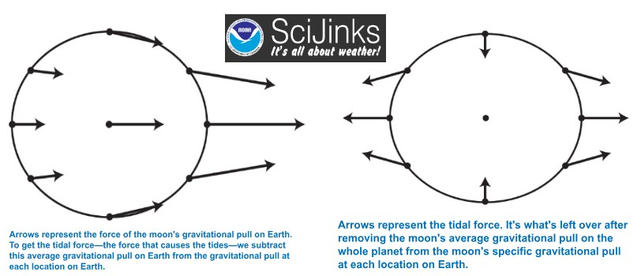
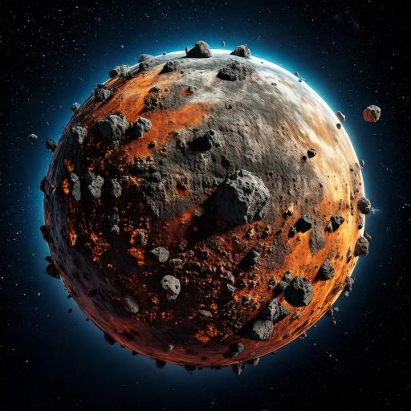
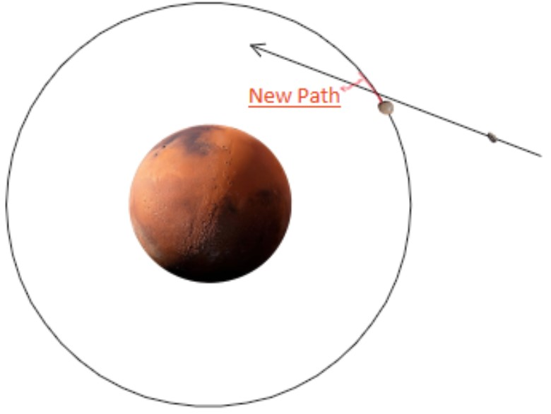

The Phobos Plan
It's time we start managing our Copernican System!

Considering Newton's Laws and current age of the system the major planets have long
settled into equilibrium orbiting and spinning in same direction.
Well with the exception of Venus and Uranus.
Simply put Venus spins in the wrong direction if much at all. Uranus acts like
it tipped over - decently recently. Ceres and the asteroid belt are choas.
There are
TNOS (Trans Neptonian
Objects) orbiting the outer system that Newton's Laws
can't explain.
Whether the current chaos is intentional or not, it's time to move some mass!
Reliable and affordable docking technology
used to supply space stations can attach to asteroids and guide them into a merging orbit with a moon
lifting the orbit and increasing the mass.

Life as we know it is highly reliant on energy locked carbon chains - these start out in their
highest energy form as petroleum. Before the industrial age mostly oleum on the surface
was used to power the world and was renewable.
Petroleum is a naturally occurring yellowish-black liquid mixture, consisting mainly of hydrocarbons. Petroleum
refers to “naturally occurring unprocessed crude oil” or “refined crude oil”. Crude oil is a smelly, flammable
liquid.
The word derives from the Latin words of petra and oleum, meaning rock and oil, since it is found in
geologically
formed rocks .
Life as we know it is highly reliant on carbon atoms. This element is immensely important since it is the
backbone of organic molecules. Its chemical structure permits it to form long chains of compounds since it can
hold four chemical bonds at a time.
Hydrocarbons, like most oils, are made entirely of hydrogen and oxygen.

Gasoline, for example, is a type of petroleum that exhibits amounts of Bezane, among other hydrocarbons, which
releases energy as depicted in the following reaction.
Here is a list of hydrocarbons
found
in Gasoline.
The following process explains how oxygen can be used to combust a hydrocarbon [the most basic example being
methane with one carbon and four oxygen atoms] to release energy after the hydrocarbon converts into carbon
dioxide and water vapor.

This video explains how to balance the number of oxygens needed to produce this combustion reaction for
Benzene.

There are two main theories for the production of Petroleum and oil.
The more accepted theory is that crude oil is a liquid fossil fuel that
is
found in large underground deposits.
Fossil fuels form through heat and pressure applied on the remains of buried plants and animals that lived
millions of years ago.
The other process is known as abiotic, meaning that petroleum can be
produced independently of biological origin.
Early hypotheses were noted by Marcellin Berthelot of how hydrocarbons could be created from the acid
dissolution
of steel or by the Russian scientist, Mendeleev, claiming that petroleum was created from chemical reactions of
water with iron carbides in the upper regions of Earth’s mantle.
Mendeleev’s theory was further advanced upon in the 1950s by Kudryavtsev and other publications, relying on the
thermodynamic equilibrium for chemical equilibriums that allows spontaneous formation of methane at high
temperatures and pressures, similar to those at Earth’s mantle.
Asteroid samples have portrayed signs of hydrocarbons strengthening the abiotic theory.
Petroleum is projected to be the world’s second largest energy source in 2050.
Civilization has been created thanks to energy sources such as petroleum.
Luna is our perpetual energy machine.
In latin, the Moon was called Luna, which is used to describe moon related phenomena, i.e. Lunar cycle.
With a very thin atmosphere, there is no protection from ongoing asteroids, meteoroids, and comets striking its
surface. A known one is the Tycho Crater that is more than 52 miles wide.
Nearly the entire Moon is covered by a rubble pile of charcoal-gray, powdery dust, and rocky debris.The darker
spots are impact basins that were filled with lava.


The radius is 1080 miles, equating to a surface area of roughly 4π(1080)² =14,657,414.7 square
miles,
which is less than Asia’s 17,212,000 square miles

The leading theory behind how Earth’s moon was formulated can be depicted in Alice Harpole’s
video intended for children, which theorizes that the moon originated from the Earth, after a collision of
a
third party body.
Limiting the formation of the moon to such a process, while interesting, is likely incomplete, for which there
was
probably a much longer and detailed story between these bodies before they settled in this state.
Another theory is that the moon was captured after forming somewhere else in the solar system.
Lunar samples collected suggest that the moon is differentiated into different segments, like the Earth is,
having
higher density materials more concentrated towards the center and lighter density materials closer to the
surface.
It is hypothesized that its metallic core, about 20% of its diameter, is composed of iron and some nickel. The
recorded samples suggest that the moon hosted a magma ocean within it, that chunks of denser mantle minerals
such
as olivine and pyroxene sank down to the bottom of the magma ocean, and that lighter minerals crystallized to
the
surface.
Such as the Earth exerts a force that keeps the moon in its orbit through centripetal acceleration, following a
circular path, the moon exerts a force on the Earth.
These forces are called tidal forces as they squeeze the Earth and portray the phenomenon shaping high tides and
low tides through Earth’s water. As the Earth rotates, the same region experiences both types of forces
throughout
the day [a complete Earth’s rotation] .
Due to forces being weaker the farther away the source, if you were to subtract the average force from the
center
that directly pulls the entire Earth, the difference of forces portrays the figure to the right where the Earth
experiences an outward stretching and squashing.
There are friction-like forces that are created from these bulges that slow down Earth’s rotation, heats up the
Earth, and stabilizes Earth’s tilt in reference to its rotational axis.

These tidal forces might additionally impact the inner facings of the outer surface of the Earth, generating
stresses that may drive the pathways of Earth’s tectonic plates, a concept that describes the Earth’s surface
being made up of solid slab plates. This is calculated in detail by J.J. Zanazzi and Amaury H.M.J Triaud in
“The ability of significant tidal stress to initiate plate tectonics”. The movement of these tectonic
plates can free mature oil and gas from deep within the deposits in the grounds
Mars needs renewable oleum for it's atomsphere and nutrients to support abundent life.
Mars is the fourth planet from the Sun, right after Earth. Its surface is orange-red as it is covered in iron
oxide dust. It reflects a lot of sunlight and appears bright from Earth’s night sky view.
Mars’ distance from the Sun is 1.5 times that of the Earth from the Sun. Its mass is 0.107 of that of the Earth
and its size is 0.15 of that of the Earth.
Mars exceeds Earth's rotational period by less than one hour but orbits the Sun in 1.9 times the time Earth
takes
to orbit the Sun.
Mars’ atmosphere is less than one percent of Earth’s, with Carbon dioxide dominating as its most abundant
molecule
and constant swarming dust filled with toxic salt. The atmosphere is far less effective in shielding solar
radiation. Despite its unwelcoming environment, potential bases for mining resources have been hypothesized.
Mars’ surface is a cold radioactive desert.
NASA initiated an official plan named ”Journey to Mars” with a goal to establish an Earth independent base.
Ongoing research has established that through resources originating from Mars to produce water and construction
materials can be made originating on the planet. This is in line with the discovery of the European Space
Agency’s
discovery of water ice under the equator and compressing Martian soil into strong solids. These bodies of water
could have contained single-celled organisms compressing to deposits of oil. Alternatively, studies suggest the
potential of Mars to host primordial hydrocarbons from the initial formations of the planets.
Although there isn’t evidence of current day tectonic plate activity on Mars, there may have been such activity
in the past. It is not clear whether the beginning of the insides of Mars’ surface would exhibit enough pressure
and heat to currently produce abiotic petroleum if it does exist. A good location to investigate current
production of petroleum would be within mountain layers where there are intense pressures exerted within layers
of
rock.
Phobos is the largest moon Mars has and hence is the to aggregate asteroids to.
Phobos is one of two moons that orbit Mars. It is about 150 times smaller than Earth’s moon, with a radius of
6.9
miles. Its orbital radius is about, 41 times closer to Mars than the Moon to the Earth, centering around 9378km,
and its mass is about 0.0000146 percent of the Moon’s mass. Its average density is less than twice the density
of
water. Since we do not have soil samples of Phobos, we are not certain about much of its specifics. We can
mainly
make conjectures based If Phobos turns out to be easier to inhabit than Mars, it could be used as a way point
for
exploring Mars in the future.
Identifying its origin story would mutually elaborate on its composition. The two leading theories for the
formation of Phobos are being captured from the outer solar system or being ejected from Mars. Being captured
from
the outer solar system would entail agreement with the spectral properties observed in D-type bodies in the
outer
asteroid belt and Trojan asteroid population. This is due to low albedo and red spectrum, meaning that it does
not
greatly reflect sunlight and is likely composed of materials that glow in a red spectrum color such as
organic-rich silicates, carbon, and anhydrous silicates. A capture from the inner solar system would require
space
weathering to alter the composition of igneous rocks rich in magnesium and iron. Past capture simulations
generally performed poorly to replicate the stability of Phobos’ orbit, leading to a bias of belief towards
being
formed from Mars. This would entail a composition similar to the bulk of Mars which has a mean density of about
four times the density of water, with higher densities known to gravitate towards the center of the planets.
This
theory would still require space weathering to alter the composition of the surface.


The plan is to use Phobos as a tool to directly act on Mars, where altering its
orbit can enhance or deter the tidal stresses caused on Mars by Phobos. By directing asteroids
towards
Phobos, some of them may be captured to then add to Phobos’ mass through aggregation as depicted in the figure.
Alternatively if the asteroids are fast enough they can pull Phobos through the force of gravity to alter its
orbit around Mars. This will ultimately be done to extract resources such as hydrocarbons from Mars, where a
main
goal would be to generate enough rocket fuel to legitimize a mission that produces more profit than the
associated
costs.